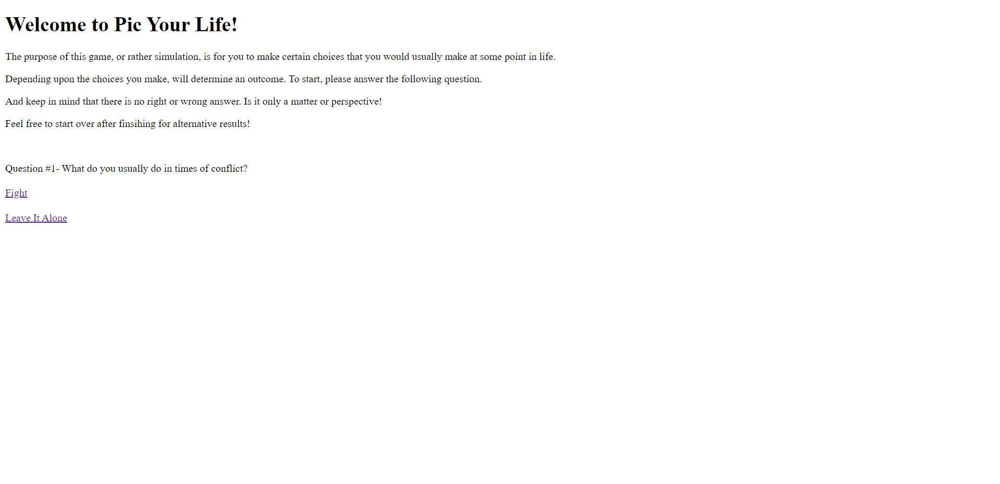

This is the Net Art project for my ART 74 class. The task was to create a website using GitHub that tells an interesting story, that it manages to be a work of art in Internet form. The link below will take you to the original website.
Net Art-"Pic Your Life" 